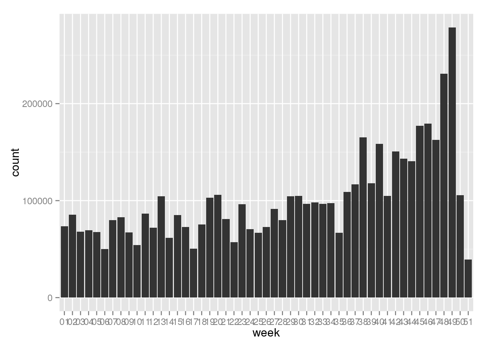

Chapter 7 Intermediate SQL {intermediate-sql}
You now have a good knowledge of basic SQL, and you are able to create subsets, aggregations and new combinations of data. This is already enough to make good use of any database you have access to, allowing you leverage the database's data crunching abilities to extract results much more tailored to your needs than simply copying the entire table from Oracle to R.
7.1 Create conditional statements with CASE WHEN
SQL is not made for traditional programming with looping, conditional operations, and variable assignments i the fast and loose way that we might be used to from other languages. SQL is operations on datasets, but there is a syntax for if-else statements that comes in handy: CASE WHEN.
We noted earlier that some of the sales in our transaction data seems to be negative - which is unexpected. In real world data, surprises like this are common, and often come about because you lack knowledge of where the data comes from. Indeed, if you have experience from sales, you might be bored right now thinking of course some reciepts are negative! Have you never heard of a return?
Let's explore the negative values a little more. Since it was the product of unitPrice and Quantity that was negative, we are looking for rows where either one of them is negative (but strictly speaking it would be OK if both of them were). As so often, we start by just looking at a few examples to get a feel for what we are dealing with.
SELECT * FROM trx
WHERE unitprice<0 OR quantity<0
FETCH FIRST 10 ROWS ONLY| INVOICENO | STOCKCODE | DESCRIPTION | QUANTITY | INVOICEDATE | UNITPRICE | CUSTOMERID | COUNTRY |
|---|---|---|---|---|---|---|---|
| C536391 | 22556 | PLASTERS IN TIN CIRCUS PARADE | -12 | 2010-12-01 10:24:00 | 1.65 | 17548 | United Kingdom |
| C536391 | 21984 | PACK OF 12 PINK PAISLEY TISSUES | -24 | 2010-12-01 10:24:00 | 0.29 | 17548 | United Kingdom |
| C536391 | 21983 | PACK OF 12 BLUE PAISLEY TISSUES | -24 | 2010-12-01 10:24:00 | 0.29 | 17548 | United Kingdom |
| C536391 | 21980 | PACK OF 12 RED RETROSPOT TISSUES | -24 | 2010-12-01 10:24:00 | 0.29 | 17548 | United Kingdom |
| C536391 | 21484 | CHICK GREY HOT WATER BOTTLE | -12 | 2010-12-01 10:24:00 | 3.45 | 17548 | United Kingdom |
| C536391 | 22557 | PLASTERS IN TIN VINTAGE PAISLEY | -12 | 2010-12-01 10:24:00 | 1.65 | 17548 | United Kingdom |
| C536391 | 22553 | PLASTERS IN TIN SKULLS | -24 | 2010-12-01 10:24:00 | 1.65 | 17548 | United Kingdom |
| C536379 | D | Discount | -1 | 2010-12-01 09:41:00 | 27.50 | 14527 | United Kingdom |
| C536383 | 35004C | SET OF 3 COLOURED FLYING DUCKS | -1 | 2010-12-01 09:49:00 | 4.65 | 15311 | United Kingdom |
| C536506 | 22960 | JAM MAKING SET WITH JARS | -6 | 2010-12-01 12:38:00 | 4.25 | 17897 | United Kingdom |
Immediately, we notice that these are often quite normal-sounding products, and the quantity is negative, not the price. Let's check that theory.
SELECT * FROM trx
WHERE unitprice<0
FETCH FIRST 10 ROWS ONLY| INVOICENO | STOCKCODE | DESCRIPTION | QUANTITY | INVOICEDATE | UNITPRICE | CUSTOMERID | COUNTRY |
|---|---|---|---|---|---|---|---|
| A563186 | B | Adjust bad debt | 1 | 2011-08-12 14:51:00 | -11062 | NA | United Kingdom |
| A563187 | B | Adjust bad debt | 1 | 2011-08-12 14:52:00 | -11062 | NA | United Kingdom |
Out of over 500 000 rows, 2 have a negative unit price because they seem to be striking bad debt that they can't collect.
Now, we can use the CASE WHEN clause to find the total effect of these negative values.
SELECT SUM(CASE WHEN quantity>0 AND unitPrice>0 THEN quantity*unitPrice ELSE NULL END) AS positive_sales,
SUM(quantity*unitPrice) AS all_sales
FROM trx| POSITIVE_SALES | ALL_SALES |
|---|---|
| 10666685 | 9747748 |
Had the shop been able to stave off bad debt and the negative quantities that we for now presume to be returns, it would have 10 million pounds in revenue. The difference, close to 900 000 ponds, is about 10 % of sales. In order to find out if this is to be expected, we would need to talk to someone with knowledge of the business.
From a technical standpoint, the SQL sums either the product of quantity and unitPrice if they are both positive, or NULL (which the sum function implicitly omits) if one or both of them is negative. This gives us the sum of positive sales right next to the sum of all sales. Thanks to CASE WHEN there was no need to split this into two queries. In R, aggregation functions usually return NA (the R version of NULL) by default if one or more values it is aggregating is NA. SQL simply omits missing values, pretending they aren't even there.
| Other Databases |
|---|
| Oracle requires any group by variables to be included in the select statement too. Some other databases do not require this. Likewise, the group by statement can not include the shortnames assigned to the variables |
7.2 Filter on aggregates with HAVING
When we found the 4 biggest countries, we used the rownum keyword in combination with ORDER BY to get the 4 biggest countries. 4 was an arbitrary cutoff, maybe we are interested in all countries with more than 100 000 pounds in total sales? The WHERE clause only works on the underlying rows, not on computed aggregates. Instead, there is a seperate keyword, HAVING, that lets you filter on the aggregated values. Let's find the countries with more than 100 000 in revenue.
SELECT country, SUM(quantity*unitPrice) AS sales FROM trx
GROUP BY country
HAVING SUM(quantity*unitPrice)>100000
ORDER BY 2 descThere is a total of 6 contries that sold for mor than 100 000 pounds, with Australia closest to the cutoff with 137 000 in sales. Unfortunately, HAVING doesn't understand the column names we assign in SELECT (sales in this case), so we need to repeat the entire expression when filtering. ORDER BY, on the other hand, is perfectly happy sorting by either sales or simply the column number as shown here.
7.3 More about limiting the result with FETCH FIRST
We have already seen how to return only a given number of rows with the FETCH FIRST command. Some may be familiar with another way of limiting results, using the ROWNUM pseudo-column like this:
SELECT country, description FROM trx
WHERE rownum < 10| COUNTRY | DESCRIPTION |
|---|---|
| United Kingdom | CREAM HEART CARD HOLDER |
| United Kingdom | ENAMEL FLOWER JUG CREAM |
| United Kingdom | ENAMEL FIRE BUCKET CREAM |
| United Kingdom | ENAMEL BREAD BIN CREAM |
| United Kingdom | SET 3 WICKER OVAL BASKETS W LIDS |
| United Kingdom | JAM MAKING SET PRINTED |
| United Kingdom | JAM MAKING SET WITH JARS |
| United Kingdom | JUMBO BAG DOLLY GIRL DESIGN |
| United Kingdom | TRADITIONAL CHRISTMAS RIBBONS |
This works just fine in many situations, but has two drawbacks. For one, it doesn't work on aggregates. The following query would fail:
SELECT country, COUNT(1) FROM trx
GROUP BY country
HAVING rownum < 10FETCH FIRST on the other hand, works like a charm.
FETCH FIRST can also be combined with an offset, letting you fetch, say, row 11-20 instead of row 1-10. This is not possible with ROWNUM, as the first row returned is always row one. Including WHERE ROWNUM>10 in a query will return an empty resultset.
Offsets can be handy in, for example, the classical example of cycling through a paginated list of items. You have a large number of rows, ordered by some condition, and you want to show only 10 at a time, with a "next page" link at the bottom of the list. If we want to show rows 11-20, we can simply modify the query slightly.
SELECT country, SUM(quantity*unitPrice) AS sales FROM trx
GROUP BY country
ORDER BY sales desc
OFFSET 10 ROWS FETCH NEXT 10 ROWS ONLY| COUNTRY | SALES |
|---|---|
| Japan | 35341 |
| Norway | 35163 |
| Portugal | 29367 |
| Finland | 22327 |
| Channel Islands | 20086 |
| Denmark | 18768 |
| Italy | 16891 |
| Cyprus | 12946 |
| Austria | 10154 |
| Hong Kong | 10117 |
7.4 Simple convenience functions
7.4.1 The decode function
Sometimes, a CASE WHEN statement can be a little much. Enter the decode function, which is a type of case-when statement as a function. The decode function takes an even number of arguments. The first value is the variable or expression you want to check. The second and the third are the value you are checking against and the value you want returned, respectively. This argument pair can be repeated any number of times. Lastly, there is a single argument to specify the else value, which is returned if none of the previously stated happen.
Say, you want to quickly recode the gender from 'Male' and 'Female' to the german equivalents. This can be done as follows:
SELECT DECODE(gender, 'Male', 'Männlich', 'Weiblich') FROM customer| DECODE(GENDER,'MALE','MANNLICH','WEIBLICH') |
|---|
| Mannlich |
| Mannlich |
| Mannlich |
| Mannlich |
| Mannlich |
| Mannlich |
| Mannlich |
| Weiblich |
| Mannlich |
| Mannlich |
If we want to take care of potential missing/bad values in the data, we have to add an unknown category. If we don't, all values not equal to 'Male' will return with the female label. At the same time, lets use what we have learned about aggregations and unions to check that the result is correct (and learn something about the gender balance among our customers).
SELECT DECODE(gender, 'Male', 'Männlich', 'Female', 'Weiblich', 'Nicht spezifiziert') AS geschlecht, COUNT(1) AS anzahl FROM (
SELECT gender FROM customer
UNION ALL
SELECT NULL AS gender FROM dual
)
GROUP BY DECODE(gender, 'Male', 'Männlich', 'Female', 'Weiblich', 'Nicht spezifiziert')
ORDER BY 2 DESC| GESCHLECHT | ANZAHL |
|---|---|
| Mannlich | 2479 |
| Weiblich | 2369 |
| Nicht spezifiziert | 1 |
The NULL value triggers the other part of the decode function, and results in one extra row and one entry in the "unspecified" category.
7.4.2 upper / lower
In many search and language processing applications it is vital to omit differences in capitalization. The fastest way to do this is usually to convert everything to upper- or lowercase, which can be done easily in SQL with the UPPER() and LOWER() function.
These functions are quite uncomplicated. The short example below converts email-addresses to both upper and lower case.
SELECT email, UPPER(email), LOWER(email) FROM customer
FETCH FIRST 5 ROWS ONLY7.4.3 substring
Text strings are often very well-structured, and you may know exactly which characters in the column you are interested in. The SUBSTR function takes two (optionally three) arguments. First, the column you want to find a substring in. Second, the letter number you want to start reading from, and optionally the number of letters you want to return.
In the customer table, the INCOME_LEVEL column consists of a letter, followed by the actual income bracket. Suppose we want to return only the letter in our query, or only the income level, the SUBSTR function is fast and easy because we always know which position the letters and dollar amounts have.
SELECT gender, SUBSTR(income_level, 1,1), SUBSTR(income_level, 4) FROM customer
FETCH FIRST 5 ROWS ONLY| GENDER | SUBSTR(INCOME_LEVEL,1,1) | SUBSTR(INCOME_LEVEL,4) |
|---|---|---|
| Male | E | 90,000 - 109,999 |
| Male | E | 90,000 - 109,999 |
| Male | A | Below 30,000 |
| Male | C | 50,000 - 69,999 |
| Male | F | 110,000 - 129,999 |
7.4.4 Regular expressions
Making sense of freeform text is always a challenge, and regular expressions (or regex in jargon) is a powerful tool for the task. Regex is a way too complex subject to explain in detail here, but we do afford ourselves a few examples from Oracle's regex functions.
In short, regex allows you to find patterns in text, such as extracting only digits from a field, validating email addresses, or select all capitalized words that occur in groups of two or more (suspected personal names).
SELECT COUNT(*) FROM customer
WHERE REGEXP_LIKE(email, '[a-zA-Z0-9_\.]+@[a-zA-Z0-9_\.]+\.[a-zA-Z]')| COUNT(*) |
|---|
| 4832 |
We could also extract last names (as in: last word in the name) from the cast table, and see what last names are most popular in Hollywood.
SELECT regexp_substr(name, '\w+$') AS last_name, COUNT(1) AS occurences FROM crew
GROUP BY regexp_substr(name, '\w+$')
ORDER BY 2 DESC| LAST_NAME | OCCURENCES |
|---|---|
| NA | 84 |
| small | 60 |
| Smith | 31 |
| Johnson | 23 |
| Jones | 22 |
| Miller | 20 |
| Williams | 17 |
| Cohen | 16 |
| Wilson | 16 |
| Lee | 16 |
There are other regex functions in Oracle, that lets you replace text (REGEXP_REPLACE) and count the number of occurences of a pattern in a string (REGEX_COUNT).
7.4.5 Dealing with dates
There is a good chance that a table near you has a column that represents time in some sense. There is also a good chance that the column is stored as something other than a date. Sometimes this is reasonable, but a lot of the time, storing dates and times as actual dates and times can be very beneficial.
We already touched on the concept of dates in chapter 5, but we did not elaborate on it. What we did, was to instruct the database that the column INVOICEDATE should be interpreted as a date, and specify the date format in a separate argument. In our case, we were dealing with not just a date but with a timestamp containing the date in the format YYYY-MM-DD followed by a space followed by the time in the format of HH24:MI:SS - that is the hour (zulu-time, 24 hours), colon, minutes (00-59), colon, seconds (00-59). The entire line of code called the TO_DATE function, with the argument is TO_DATE(INVOICEDATE, 'YYYY-MM-DD HH24:MI:SS') AS INVOICEDATE.
Having a column properly defined as a date, you can start doing some neat stuff like subtracting two dates from each other, which returns the number of days in between. Try it yourself:
SELECT TO_DATE('01-01-2017', 'DD-MM-YYYY') - TO_DATE('01-01-2016', 'DD-MM-YYYY') AS time_diff FROM DUAL| TIME_DIFF |
|---|
| 366 |
If you think the database must be of its rockers to suggest there was 366 days between january 1st 2016 and january 1 2017, remember that 2016 was a leap year. R has the same concepts, a similar way of parsing dates (which you also saw briefly in chapter 5), and is also in agreement that there were 366 days in between january 1st 2016 and january 1st 2017.
strptime("01/01/2017", format = "%m/%d/%Y") - strptime("01/01/2016", format = "%m/%d/%Y")## Time difference of 366 daysOnce your column is defined as a date, there are some other nice features built in that can be very useful. Dates can be converted to many other formats, such as week number, or day of week. Lets check our sales by day of week:
SELECT TO_CHAR(invoicedate, 'DAY'), SUM(quantity) AS units_sold FROM trx
GROUP BY TO_CHAR(invoicedate, 'DAY')
ORDER BY 2 DESC| TO_CHAR(INVOICEDATE,'DAY') | UNITS_SOLD |
|---|---|
| THURSDAY | 1167823 |
| WEDNESDAY | 969558 |
| TUESDAY | 961543 |
| MONDAY | 815354 |
| FRIDAY | 794440 |
| SUNDAY | 467732 |
There is definetely something odd about this data - there were no sales on saturdays, but there were sales on sunday.
Lets look at sales by week as well. But we don't want a 52-row output table to browse, so we'll do the aggregation in SQL and pass the result to R and ggplot.
q <- dbSendQuery(con, "
SELECT TO_CHAR(invoicedate, 'WW') AS WEEK, SUM(quantity) AS UNITS_SOLD FROM trx
GROUP BY TO_CHAR(invoicedate, 'WW')
ORDER BY 2 DESC
")
df <- fetch(q)
library(ggplot2)
library(dplyr)
df %>% ggplot(aes(WEEK, UNITS_SOLD)) +
geom_bar(stat = 'identity') Ggplot needs to know that this data is already aggregated, and we specify this by the argument stat='identity' that we pass to geom_bar.
Hopefully needless to say, R has similar capabilities in expressing dates as weeks and aggregating. As an example, lets try to make the same chart using R.
q <- dbSendQuery(con, "
SELECT invoicedate, quantity FROM trx
")
df <- fetch(q) %>% mutate(week = strftime(INVOICEDATE, format = "%V"))
library(ggplot2)
library(dplyr)
df %>% ggplot(aes(week)) +
geom_bar(aes(weight = QUANTITY) )
As we hoped for, the charts look identical, and its up to you to decide which one to use. If the data is big enough, you probably want to do leave the aggregation to the database.
7.5 What we are not going to cover
7.5.1 PL/SQL
PL/SQL is Oracle's programming language extension to SQL. It lets you declare variables, run conditional statements and loops, in order to generate SQL statements on the fly.
Since we are using R which usually covers these use cases, there are few arguments for learning PL/SQL too.
7.5.2 the dbplyr library
If you prefer avoid SQL when possible, you should consider using a library called dbplyr. This is an interface that lets you write code that should be familiar to any dplyr user, that is then run in the database as SQL. The authors have done a great job at optimizing the code, so that the resulting database queries are every bit as performant as you could hope for. But, like many libraries, it has its limitations as well. To illustrate examples of when this works and when it doesn't, we will try to get a summary of sales by country like we did in chapter 6.1.2, and generate summaries by weekday like we did above.
library(dbplyr)
#define a r-object that references the database table
trxtbl <- tbl(con, "TRX")
# Run dplyr-code just like it was a regular data frame
trxtbl %>%
group_by(COUNTRY) %>%
summarize(total_sales = sum(QUANTITY*UNITPRICE)) %>%
collect() %>%
arrange(desc(total_sales)) %>%
top_n(3)## Selecting by total_sales## # A tibble: 3 x 2
## COUNTRY total_sales
## <chr> <dbl>
## 1 United Kingdom 8187806.
## 2 Netherlands 284662.
## 3 EIRE 263277.But if we try to do the same with weekdays, we get a strange error-message.
trxtbl %>%
mutate(week = strftime(INVOICEDATE, format="%V"))
group_by(week) %>%
summarize(total_sales = sum(QUANTITY*UNITPRICE)) %>%
arrange(desc(total_sales)) %>%
top_n(3)
Error in .oci.SendQuery(conn, statement, data = data, prefetch = prefetch, : ORA-00907: missing right parenthesis
It is easy to see what went wrong, by passing the result to the show_query() function. We can do this in the same workflow, by just piping to show_query().
trxtbl %>%
mutate(week = strftime(INVOICEDATE, format="%V")) %>%
group_by(week) %>%
summarize(total_sales = sum(QUANTITY*UNITPRICE)) %>%
arrange(desc(total_sales)) %>%
top_n(3) %>%
show_query()
SELECT "week", "total_sales"FROM (SELECT "week", "total_sales", rank() OVER (ORDER BY "total_sales" DESC) AS "zzz12"FROM (SELECT *FROM (SELECT "week", SUM("QUANTITY" * "UNITPRICE") AS "total_sales"FROM (SELECT "INVOICENO", "STOCKCODE", "DESCRIPTION", "QUANTITY", "INVOICEDATE", "UNITPRICE", "CUSTOMERID", "COUNTRY", STRFTIME("INVOICEDATE", '%V' AS "format") AS"week"FROM ("TRX") ) "egcdmyvzjl"GROUP BY "week") "jtxdupatwa"ORDER BY "total_sales" DESC) "tguwvduhof") "fgqwxodxti"WHERE ("zzz12" <= 3.0)
dbplyr has generated quite a large query for us, but it passed the r-specific strftime function into the SQL statement, which is what caused the error. SQL and R-code don't mix.
The generated code ran at a cost of 3147 once the strftime function had been replaced with TO_CHAR(). Writing the same statement myself somewhat differently resulted in a cost of 3020 - a neglible difference. It is also interesting to see how dbplyr utilizes windowing functions, which is a fairly new addition to the SQL language. We will learn more about windowing functions in 9.1